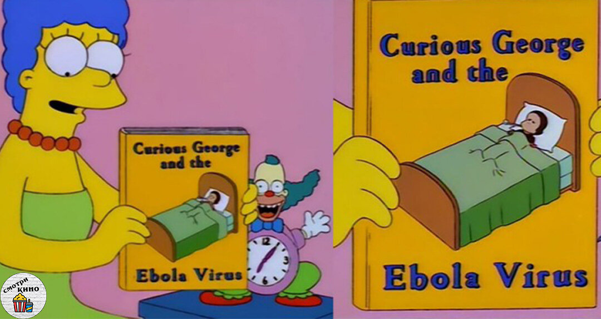
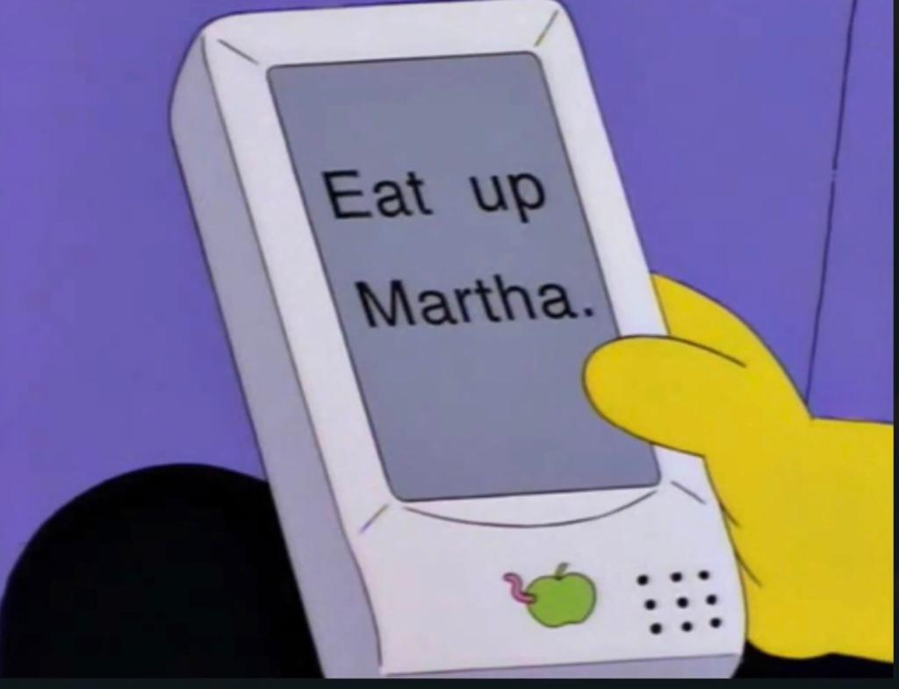
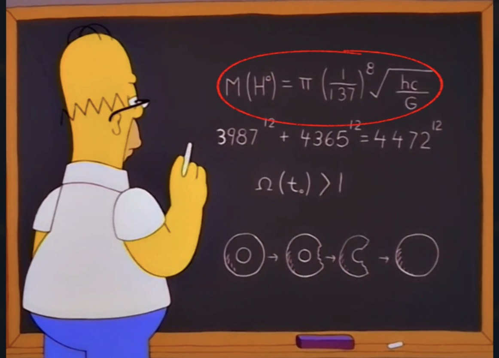

Начнем не с самого сложного:
Этот кадр из серии 1997 года "предсказывает" эпидемию эболы произошедшую в 2014 году. Однако открытие эболы произошло задолго до ее выхода, в 1976.
А эпидемии проходили постоянно, и в 1997 году тоже. Эта история и была рассказана в эпизоде сериала
В этой серии 1994 года, по версии СМИ, Симпсоны предсказали автокоррекцию слов за несколько лет до ее появления.
Однако здесь важен контекст.
.jpg)
↓
Один из персонажей в кадре говорит: "Запиши в свой Ньютон "Отделать Мартина" ".
Здесь нам показывыют пародию на логотип Apple. А ведь у Apple и правда было устройство с названием Newton, настолько неудачное, что порой не могло исправить даже своё имя.
Эта история появилась в газетах за полгода до выхода серии, а Симпсоны просто высмеяли ее.
В 1996 Гомер Симпсон почти безошибочно рассчитал массу бозона Хиггса. По этому уравнению мы можем понять, что масса бозона Хиггса равна 775 гигаэлектронвольт. Спустя почти 13 лет ученые выяснили настоящую массу бозона - 125 гигаэлектронвольт. Как же это возможно?
Дело в том, что один из сценаристов сериала Девид Коэн закончил Гарвард и является доктором компьютерных наук. Уравнения на доске были его идеей. Тогда тот позвонил своему давнему другу Дэвиду Шаминовичу, который и составил приблизительное уравнение.
И наверное самое сложное на сегодня:
Симпсоны предсказали катастрофу произошедшую 11 сентября 2001 года.
Лиза показывает журнал, на котором написана цена поездки в Нью-Йорк - 9$, и главную достопримечательность города - Башни Близнецы. Из этого получается 9.11 - дата проишествия. Но такая цена не была взята с потолока, сейчас, например поездка из Принфилда в Нью-Йорк стоит 9$ или 11$. А Башни близнецы на обложке потому что это главная достопримечательность города.
Получается, что Симпсоны ничего не предсказывали. Вот странно-то? :)